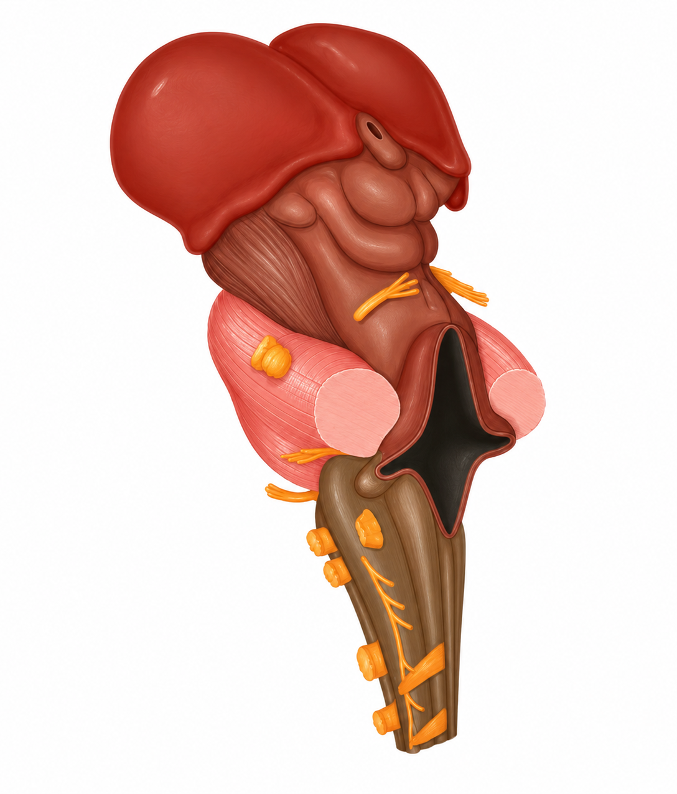

Central brain region
Midbrain
The midbrain is a small region between the forebrain and hindbrain. It helps coordinate sensory responses and movement and acts as a pathway for information traveling through the brain.

Key Structures
Three areasTectum
Location: Dorsal, or back, portion of the midbrain.
Main roles: Helps orient the eyes, head, and body toward important visual and auditory stimuli.
Tegmentum
Location: Central portion of the midbrain, below the tectum.
Main roles: Contributes to movement, alertness, sleep, and the processing of sensory information.
Substantia Nigra
Location: A dark band within the midbrain.
Main roles: Produces dopamine and helps regulate movement, motivation, and reward-related behavior.
Sources
OpenStax Anatomy and Physiology 2e — Key Terms · NCBI Bookshelf — Neuroanatomy, Midbrain · NCBI Bookshelf — Substantia Nigra